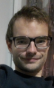
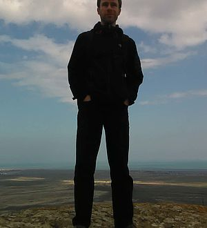
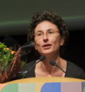
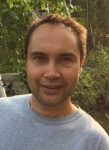
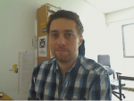
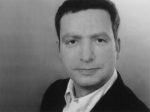
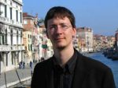
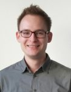

Université de Lille
CNRS UMR 8163 – Savoirs, Textes, Langage
Le groupe lillois coordonne l’exploitation du corpus bilingue du latin – ancien français.
Prof. Anne Carlier (maintenant Sorbonne Paris)
Jasper Vangaever (doctorant)
Lieven Danckaert (Chargé de recherches, CNRS)
ENS de Lyon
UMR 5317 IHRIM / CNRS
L‘équipe lyonnaise est responsable de la constitution du corpus en ancien français (choix et description des textes, annotation linguistique) et de l’intégration de l’ensemble des textes (latins et français) dans la plateforme TXM.
Céline Guillot-Barbance (Maître de conférences)
Serge Heiden (Ingénieur de recherche)
 Naomi Kanaoka (Post-doc)
Naomi Kanaoka (Post-doc)
Alexei Lavrentiev (Ingénieur de recherche)
Matthieu Decorde (Ingénieur d’étude, développeur d’applications)
Universität Regensburg
Études en langues romanes
Les membres du département des langues romanes s’occupent du développent d’un schéma d’annotation pour le latin et de l’annotation du corpus latin.
Elisabeth Reichle (doctorante)
Auxiliaires universitaires: Christina Bauer, Waldemar Blech, Veronika Gonschorek, Silvia Prokoph, Victoria Seitz, Matthias Sieber, Julia Stockinger, Marius Wahl, Mirjam Zelzer
informatique des médias
Le département des médias numériques s’occupe de la préparation des documents du corpus et du développement des outils appropriés pour l’annotation en se concentrant en particulier sur l’ergonomie des outils.
Dr. Manuel Burghardt (Post-doc)
Dr. Lars Döhling (Ingénieur de recherche, maintenant Centre informatique de l'université de Regensburg (CC))
Eberhard Karls Universität Tübingen
Études en langues romanes
Les membres du projet à l’Université de Tübingen s’occupent de la compilation des textes latins du corpus et des métadonnées, ainsi que du développement d’un jeu d’étiquettes approprié.
Apl. Prof. Dr. Rembert Eufe
Sebastian Ortner, M. A. (doctorant, maintenant LMU Munich)
Auxiliaires universitaires: Delia Brix, Renée Eisele